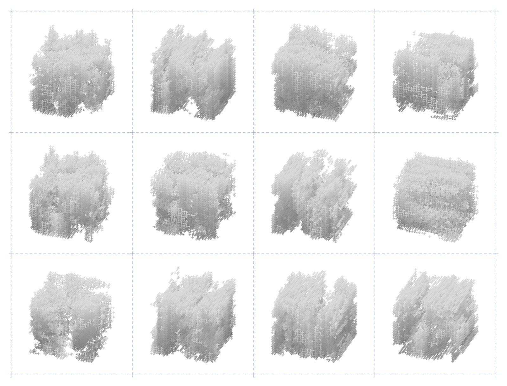

평면과 같은 규칙(노이즈 · 장면 · 바람 · 빈 공간을 미는 바람)을 아래로 10 m 이어 계산한 정육면체 12개입니다. 재생하면 평면과 같은 순간에 정육면체 안의 빈 공간도 함께 흘러갑니다.
읽는 법. 38.5 cm 칸 26 × 26 × 26 = 10 m 정육면체, 칸 하나 = XYZ 십자 하나. 위는 구름처럼 흩어지고 아래로 갈수록 덩어리가 됩니다. 위에서 내려오는 빛이 몸을 지날수록 줄어 안쪽과 아래가 어둡습니다. 1,200개(12칸 × 100순간)의 정육면체를 미리 계산해 영상으로 묶었습니다. 칸 배치는 평면 12장과 같습니다.
| 칸 | 장면 | 궤도 · 풍속 | 세기 s | 흐름 속도 v | 미는 방향 | 흘러간 거리 |
|---|
바람 데이터가 재생되는 법. 선은 바람 관측 위성 Aeolus(유럽우주국, 2018–2023)의 궤도 233지점을 지나며 만나는 지상 바람 세기입니다. 위성이 잰 값이 아니라 그 궤도 위의 2026-10-20 기상 모델 값(Open-Meteo)입니다. 약한 순서로 세워 가장 약한 곳(51), 3분의 1(74), 3분의 2(77), 가장 센 곳(92)을 골랐습니다. 정육면체 12개는 칸마다 이 네 바람 가운데 하나를 받습니다. 풍속은 15 m/s에서 1이 되도록 맞춘 세기 s가 되고(장면마다 받는 정도가 다름), s가 빈 공간이 흐르는 속도 v를 정합니다. 영상이 재생되는 동안 빈 공간은 칸마다 v × 시간 만큼 미는 방향으로 흘러갑니다. 표의 마지막 칸이 지금까지 흘러간 거리입니다.
